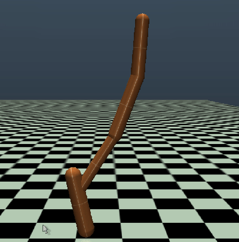
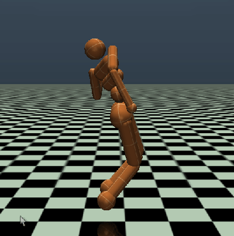
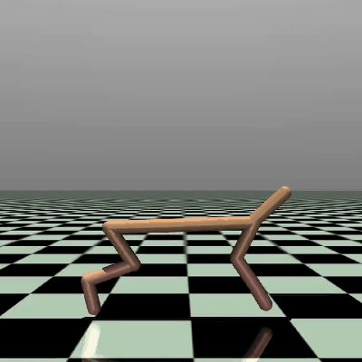
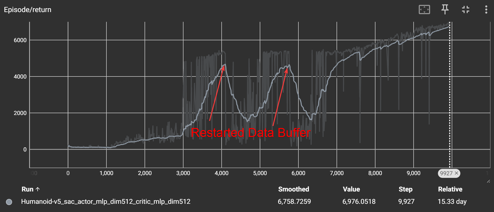

Introduction
This is a collection of my notes from implementing Soft Actor-Critic RL from scratch on a few different environments. I primarily wrote this page to teach SAC to myself, so I'll go over some implementation challenges and cover a few things that I struggled with or didn't completely understand.



SAC has the same attributes as most off-policy RL algorithms. It uses a Q network like DQN, TD3 and DDPG as the critic, but bakes in entropy as a core training objective. Entropy causes the actor to make unexpected moves during training which leads to discovering a more optimal policy. As such, it's the most popular off-policy RL training algorithm.
Data Collection and Replay Buffer
We start by collecting samples from the environment using a random policy, just to build up some data buffer. Random actions are taken since a freshly-initialized network may have a bias for specific actions over others. After 1k-10k samples, we have enough data to begin training and using the real policy to collect data.
To store episode data I used ReplayBuffer from torchrl.data - it seems to work well for this. I noticed that we also need to save the replay buffer if we shut down the script during training in order to keep the same performance when we start it back up. Otherwise the policy needs to collect fresh data all over again and performance tanks. I noticed that the policy recovers much faster than training from scratch though.

For SAC, we store state, action, reward, next state, and "done" (s,a,r,s',d) every timestep. I wouldn't recommend trying to save the previous state and use it for next_state. I went down this path for a bit and it will work, but it's also a good way to introduce bugs. Just store them both as independent things unless you really need to optimize memory.
Here's the code to generate our replay buffer:
data = TensorDict({
"state": torch.as_tensor(state_t, dtype=rl_config.dtype),
"action": torch.as_tensor(action_t, dtype=rl_config.dtype),
"reward": torch.as_tensor(reward_t, dtype=rl_config.dtype),
"next_state": torch.as_tensor(state_t1, dtype=rl_config.dtype),
"dones": torch.as_tensor(done_t, dtype=rl_config.dtype),
}, batch_size=[])
replay_buffer.add(data)Whenever we want to sample from the replay buffer, we use a random sampling strategy. This is important because it prevents the network from overfitting to a specific sequence of data. The replay buffer is typically sampled in batches, and each batch is used to train the network.
batch = replay_buffer.sample()Loss Functions
Loss functions are mathematically governing what the networks learn, so the key to understanding RL algorithms is to make sure you fully understand each loss function. In SAC we have 3 and I'll dissect each of them.
1. Critic Loss (Value)
$$L_Q(\theta) = \mathbb{E}_{(s,a,r,s') \sim D} \left[ \frac{1}{2} (\underbrace{Q_\theta(s,a)}_{\text{Prediction}} - \underbrace{(r + \gamma (\min_{j=1,2} Q_{\text{targ},j}(s', a') - \alpha \log \pi_\phi(a'|s'))}_{\text{Soft Bellman Target}})^2 \right]$$2. Actor Loss (Policy)
$$L_\pi(\phi) = \mathbb{E}_{s \sim D, a \sim \pi_\phi} \left[ \underbrace{\alpha \log \pi_\phi(a|s)}_{\text{Entropy Weight}} - \underbrace{\min_{j=1,2} Q_{\theta_j}(s, a)}_{\text{Estimated Value}} \right]$$3. Alpha Loss (Entropy Temperature)
$$L(\alpha) = \mathbb{E}_{a \sim \pi_\phi} \left[ \underbrace{-\alpha}_{\text{Learned Weight}} (\underbrace{\log \pi_\phi(a|s) + \bar{H}}_{\text{Entropy Deviation}}) \right]$$Critic Loss (Q Loss)
$$J_Q(\theta) = \mathbb{E}_{(s,a,r,s') \sim D} \left[ \frac{1}{2} (\underbrace{Q_\theta(s,a)}_{\text{Current Prediction}} - (\underbrace{r}_{\text{Reward}} + \underbrace{\gamma}_{\text{Discount}} (\underbrace{\min_{j=1,2} Q_{\text{targ},j}(s', a')}_{\text{Clipped Double-Q Target}} - \underbrace{\alpha \log \pi_\phi(a'|s')}_{\text{Entropy Bonus}})))^2 \right]$$There are actually four completely separate Q networks here, $Q_\theta$ and $Q_{\text{targ}}$, and then each is a double-Q network. $Q_\theta$, the prediction, is straightforward. For our sampled episodes, we just compute forward passes for each state, action pair when we start the training process. The tricky one is the $Q_{\text{targ}}$ network. The Target ($Q_{\text{targ}}(s', a')$) is calculated using the Target Network Weights. These are a separate, "lagging" copy of the online weights. They are NOT updated by the optimizer. Instead, they follow the online weights slowly using "Polyak averaging". It's not strictly necessary, it's just one approach to creating the target Q network.
Lastly we have the entropy term included in the target. It's subtracted because log prob is always negative, so this makes a positive incentive for the prediction Q network to assign high value to high entropy actions. Think of it this way - "Actions with high entropy should result in a high Q value". We're training the network to reflect this.
$$\text{Target} = \text{Reward} + \gamma (\text{Future Value} + \underbrace{\text{Entropy Bonus}}_{\text{High for random actions}})$$We use the learned parameter alpha to reach the target entropy, which is a SAC hyperparameter chosen based on the environment. It has its own loss - more on that later. The Q loss is simply the mean-squared-error (MSE) between the prediction and target.
Actor Loss
$$L_\pi(\phi) = \mathbb{E}_{s \sim D, a \sim \pi_\phi} \left[ \underbrace{\alpha \log \pi_\phi(a|s)}_{\text{Entropy Weight}} - \underbrace{\min_{j=1,2} Q_{\theta_j}(s, a)}_{\text{Estimated Value}} \right]$$Again, entropy is rewarded with the action logprob which explains the first term. The second term just reflects the quality of the chosen action. Minimizing the negative of this will result in backpropping gradients that increase Q, which is ultimately the objective of the actor. A key note on this is that we DON'T want to change any gradients in the Q network itself, just gradients in the actor network input to the Q network. The Q network itself is frozen for this update.
Alpha Loss
$$L(\alpha) = \mathbb{E}_{a_t \sim \pi_t} \left[ \underbrace{-\alpha}_{\text{Exploration Weight}} ( \underbrace{\log \pi_t(a_t|s_t) + \bar{\mathcal{H}}}_{\text{Entropy Gap}} ) \right]$$In the loss function, the term $(\log \pi_t(a|s) + \bar{\mathcal{H}})$ is the error signal. Since Entropy $\mathcal{H} \approx -\log \pi$, this term essentially calculates:
$$(\bar{\mathcal{H}} - \text{Current Entropy})$$The goal of alpha is to tune our actor/critic to maintain our target entropy, which is a number we choose at the beginning of training. It's usually $-\text{Dim}(\text{action space})$, i.e. if you have 8 things to control, target entropy will be -8.
Detaching Gradients
All three loss functions have "detached" term(s) when we don't want to backpropagate that specific term.
1. Critic Loss ($L_Q$)
The critic treats the target value as a fixed ground truth. We detach the entire target calculation so gradients do not flow into the target network or the actor policy during this step.
$$L_Q(\theta) = \mathbb{E}_{\tau \sim \mathcal{D}} \left[ \frac{1}{2} \left( Q_\theta(s,a) - \underbrace{(r + \gamma(Q_{\bar{\theta}}(s', a') - \alpha \log \pi_\phi(a'|s')))}_{\text{Detached Target (stop-gradient)}} \right)^2 \right]$$2. Actor Loss ($L_\pi$)
The actor maximizes the Q-value. We propagate gradients through the action $a_\phi$, but we detach the Q-network weights ($\theta$) so we don't accidentally update the critic's value estimates—only the actor's choices.
$$L_\pi(\phi) = \mathbb{E}_{s \sim \mathcal{D}} \left[ \alpha \log \pi_\phi(a_\phi|s) - \underbrace{Q_\theta(s, a_\phi)}_{\text{Fixed Q-Params (no } \theta \text{ grad)}} \right]$$3. Alpha Loss ($L_\alpha$)
The temperature $\alpha$ adjusts based on the "Entropy Gap." We detach the policy term so $\alpha$ reacts to the current entropy level, rather than the policy shifting just to satisfy the alpha constraint.
$$L(\alpha) = \mathbb{E}_{s \sim \mathcal{D}} \left[ -\alpha \cdot \underbrace{(\log \pi_\phi(a|s) + \bar{\mathcal{H}})}_{\text{Detached Policy (no } \phi \text{ grad)}} \right]$$In Python we update the losses one by one to avoid mixing gradients. After each forward pass we make sure to consume the gradients with a backward pass. Note that we compute the Q target with torch.no_grad().
# ========== CRITIC UPDATE ==========
# Q(s, a) using actions from replay buffer
q1, q2 = self.critic.forward(state_buf, action_buf)
q = torch.min(q1, q2)
# Compute target (no gradients!)
with torch.no_grad():
# a' ~ π(-|s'), logπ(a'|s')
next_action, next_action_logp = self.actor.forward(next_state_buf)
next_action_logp = next_action_logp.unsqueeze(-1)
# Q'(s', a')
q_target1, q_target2 = self.critic_target.forward(next_state_buf, next_action)
q_target = torch.min(q_target1, q_target2)
# r + γ(min Q′(s′,a′) − α logπ(a′∣s′))
target = reward_buf + self.gamma * (1.0 - dones_buf) * (q_target - alpha * next_action_logp)
# L_q = E[(Q(s,a) − target)²]
loss_q = F.mse_loss(q1, target) + F.mse_loss(q2, target)
self.critic.optim.zero_grad()
loss_q.backward()
critic_grad_norm = torch.nn.utils.clip_grad_norm_(self.critic.parameters(), max_norm=1.0)
self.critic.optim.step()
# ========== ACTOR UPDATE ==========
# Sample fresh actions from current policy
action, action_logp = self.actor.forward(state_buf)
action_logp = action_logp.unsqueeze(-1)
# Q(s, π(s)) - freeze critic so gradients only flow through action → actor
for p in self.critic.parameters():
p.requires_grad = False
q1_pi, q2_pi = self.critic.forward(state_buf, action)
q_pi = torch.min(q1_pi, q2_pi)
for p in self.critic.parameters():
p.requires_grad = True
# L_pi = E[α logπ(a∣s) − Q(s,a)]
loss_pi = (alpha.detach() * action_logp - q_pi).mean()
self.actor.optim.zero_grad()
loss_pi.backward()
actor_grad_norm = torch.nn.utils.clip_grad_norm_(self.actor.parameters(), max_norm=1.0)
self.actor.optim.step()
# ========== ALPHA UPDATE ==========
# L_alpha = E[−α(logπ(a∣s) + H_target)]
loss_alpha = (-alpha * (action_logp.detach() + self.target_entropy)).mean()
self.opt_alpha.zero_grad()
loss_alpha.backward()
self.opt_alpha.step()
# ========== TARGET NETWORK UPDATE ==========
self.critic_target_update()